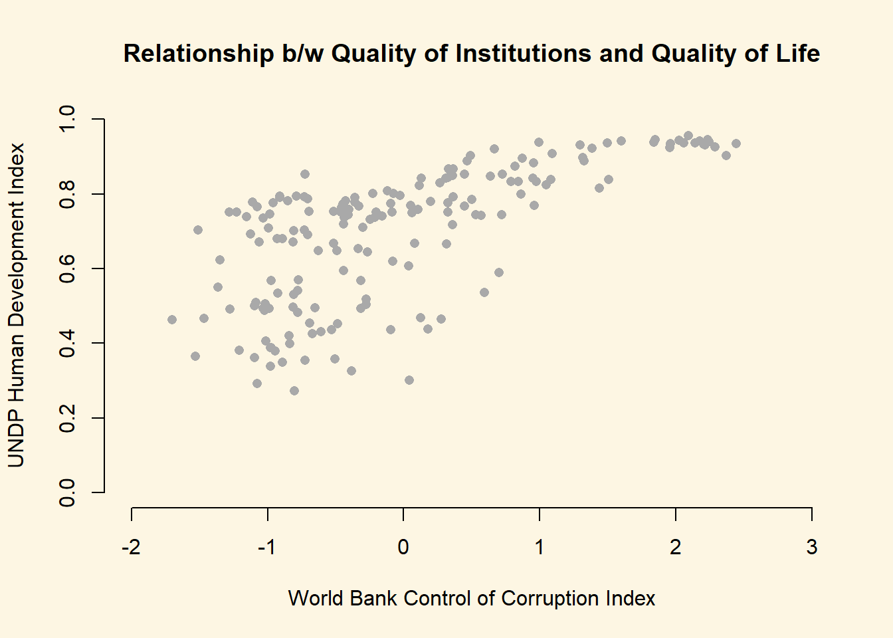

Chapter 8 Correlations and differences in means
8.1 Seminar
In this session, we will cover bi-variate relationships, that is relationships between two variables. For relationships between two continuous variables, we will look at correlations and plots and for relationships between a continuous dependent variable and a binary independent variable, we will look at differences in means.
8.1.1 Sample Variance and Sample Standard Deviation
The sample variance and sample standard deviation inform us about the degree of variability of our data. Suppose, we were to roll the dice 10 times. We could then compute the mean value that we roll. The sample standard deviation measures by how much an average roll of the dice will deviate from the mean value.
We start rolling the dice, using R’s random number generator and the runif() function. The function randomly draws numbers from a uniform distribution. In a uniform distribution each value has the same probability of being drawn. All six sides of a die should be equally likely if the die is fair. Hence, the uniform distribution.
runif() takes three arguments. n is the number of values to be drawn. min is the minimum value and max is the maximum value.
[1] 6.272162 4.109319 4.076152 4.739230 3.356122 2.573666 1.190409
[8] 3.852794 6.091411 5.864314We have indeed drawn 10 numbers but they are not integers as we would like—we want to simulate a die, so the values should be 1, 2, 3, 4, 5 or 6. We will return to this in a moment but for now let’s return to the randomness. Let’s draw 10 numbers again:
# random draw of 10 values from a uniform distribution
dice2 <- runif(n = 10, min = 1, max = 7)
# first draw
dice [1] 6.272162 4.109319 4.076152 4.739230 3.356122 2.573666 1.190409
[8] 3.852794 6.091411 5.864314 [1] 6.864539 6.826716 4.305051 1.636680 2.793040 3.612373 5.236071
[8] 5.024083 1.595036 6.429435The numbers of the first and second roll differ because we have drawn values at random. To make our results replicate and to ensure that everyone in the seminar works with the same numbers, we set R’s random number generator with the set.seed() function. As argument we plug in some arbitrary value (it does not matter which but using a different one will lead to a different quasi-random draw).
# set random number generator
set.seed(123)
# random draw of 10 values from a uniform distribution
dice <- runif(n = 10, min = 1, max = 7)
dice [1] 2.725465 5.729831 3.453862 6.298104 6.642804 1.273339 4.168633
[8] 6.354514 4.308610 3.739688You should all have the same values. If not, run set.seed() again and then do the random draw once. If you do it more than once, the numbers will change. Let’s see how this works:
# set random number generator
set.seed(123)
# 1st random draw of 10 values from a uniform distribution
dice <- runif(n = 10, min = 1, max = 7)
dice [1] 2.725465 5.729831 3.453862 6.298104 6.642804 1.273339 4.168633
[8] 6.354514 4.308610 3.739688# 2nd random draw of 10 values from a uniform distribution
dice2 <- runif(n = 10, min = 1, max = 7)
dice2 [1] 6.741000 3.720005 5.065424 4.435800 1.617548 6.398950 2.476526
[8] 1.252357 2.967524 6.727022# reset random number generator
set.seed(123)
# 3rd random draw of 10 values from a uniform distribution
dice3 <- runif(n = 10, min = 1, max = 7)
dice3 [1] 2.725465 5.729831 3.453862 6.298104 6.642804 1.273339 4.168633
[8] 6.354514 4.308610 3.739688# 4th random draw of 10 values from a uniform distribution
dice4 <- runif(n = 10, min = 1, max = 7)
dice4 [1] 6.741000 3.720005 5.065424 4.435800 1.617548 6.398950 2.476526
[8] 1.252357 2.967524 6.727022As you can see, the the draws from dice and dice3 are the same and the draws from dice2 and dice4 are the same as well. Let’s make the values integers with the as.integer() function which simply cuts off all decimal places.
# reset random number generator
set.seed(123)
# random draw of 10 numbers from a uniform distribution with minimum 1 and maximum 7
dice <- runif(10, 1, 7)
# cut off decimals places
dice <- as.integer(dice)
dice [1] 2 5 3 6 6 1 4 6 4 3dice
1 2 3 4 5 6
1 1 2 2 1 3 We have rolled a six relatively often. All sides should be equally likely but due to sampling variability, we have rolled the six most often. The expected value of a die is 3.5. That is: \[ 1 \times \frac{1}{6} + 2 \times \frac{1}{6} + 3 \times \frac{1}{6} + 4 \times \frac{1}{6} + 5 \times \frac{1}{6} + 6 \times \frac{1}{6} = 3.5\]
We compute the mean in our sample and the standard deviation. Let’s start with the mean. Do so yourself.
[1] 4The sample standard deviation tells by how much an average roll of the dice differs from the estimated sample mean. Estimate the sample standard deviation on your own using the sd() function.
[1] 1.763834An average deviation from the sample mean is 1.76.
8.1.2 T test for the sample mean
Our estimate of the mean is 4. The expected value is 3.5. Is this evidence that the die is loaded? The null hypothesis is that the die is fair. The alternative hypothesis is that the die is loaded. Run a t test using the t.test() function. The syntax of the function is:
t.test(formula, mu, alt, conf)Lets have a look at the arguments.
| Arguments | Description |
|---|---|
formula |
The formula describes the relationship between the dependent and independent variables, for example: • dependent.variable ~ independent.variable. We will do this in the t-test for the difference in means. Here, we have only one estimated mean. So, we write: • variable.name |
mu |
Here, we set the null hypothesis. The null hypothesis is that the true population mean is 10000. Thus, we set mu = 10000. |
alt |
There are two alternatives to the null hypothesis that the difference in means is zero. The difference could either be smaller or it could be larger than zero. To test against both alternatives, we set alt = "two.sided". |
conf |
Here, we set the level of confidence that we want in rejecting the null hypothesis. Common confidence intervals are: 95%, 99%, and 99.9%. |
One Sample t-test
data: dice
t = 0.89642, df = 9, p-value = 0.3934
alternative hypothesis: true mean is not equal to 3.5
95 percent confidence interval:
2.738229 5.261771
sample estimates:
mean of x
4 8.1.3 Loading real data
We will load a new dataset from the Quality of Government Institute. The dataset is called QoG2012.csv. The codebook follows.
| Variable | Description |
|---|---|
| h_j | 1 if Free Judiciary |
| wdi_gdpc | Per capita wealth in US dollars |
| undp_hdi | Human development index (higher values = higher quality of life) |
| wbgi_cce | Control of corruption index (higher values = more control of corruption) |
| wbgi_pse | Political stability index (higher values = more stable) |
| former_col | 1 = country was a colony once |
| lp_lat_abst | Latitude of country’s captial divided by 90 |
Go ahead and load the csv dataset yourself.
8.1.4 T-test (one-sample hypothesis test) with real data
A knowledgeable friend declares that worldwide wealth stands at exactly 10 000 US dollars per capita today. We would like to know whether she is right and tease her relentlessly if she isn’t.
So, first we take the mean of the wealth variable wdi_gdpc.
[1] NAR returns NA because for some countries we have no reliable information on their per capita wealth. NA means that the data is missing. We can tell the mean() function to estimate the mean only for those countries we have data for, we will, therefore, ignore the countries we do not have information for.
We do so by setting the argument na.rm to TRUE like so: mean(dataset_name$var_name, na.rm = TRUE).
[1] 10184.09Wow, our friend is quite close. Substantially, the difference of our friends claim to our estimate is small but we could still find that the difference is statistically significant (it’s a noticeable systematic difference).
Because we do not have information on all countries, our 10184.09 is an estimate and the true population mean – the population here would be all countries in the world – may be 10000 as our friend claims. We test this statistically.
In statistics jargon: we would like to test whether our estimate is statistically different from the 10000 figure (the null hypothesis) suggested by our friend. Put differently, we would like to know the probability that we estimate 10184.09 if the true mean of all countries is 10000. This probability is called the p value. Think of the p value of the probability that the relationship that we see, immerged by chance alone. If the p value is low, we can be reasonably confident that the observed relationship did not imerge by chance alone.
We usually compare our p value to a threshold value. That threshold value is called the alpha level and it is the tolerance for false positives. If the p value is less than this value, we speak of a statisically significant relationship. Otherwise, a relationship is insignificant which means we are not confident enought that result is not due to chance.
We must specify our alpha level before we carry out analysis. The acceptable alpha level depends on the quantity of data that you have and how accurartely data is measured. Essentially, the acceptable value is arbitaray. In social sciences the usual threshold value 0.5.
If the p value is less than 0.5, a relationship is significant in our eyes.
We now test whether our estimate is systematically different from the proprosed 10000 figure or not. We do this using the the t-test function t.test().
One Sample t-test
data: world.data$wdi_gdpc
t = 0.19951, df = 177, p-value = 0.8421
alternative hypothesis: true mean is not equal to 10000
95 percent confidence interval:
8363.113 12005.069
sample estimates:
mean of x
10184.09 The results are similar. Therefore, we can conclude that we are unable to reject the null hypothesis suggested by our friend that the population mean is equal to 10000. In statistics jargon, we fail to reject the null hypothesis.
Let’s move on to a t-test to test the difference between two estimated means.
8.1.5 T-test (difference in means)
We are interested in whether there is a difference in income between countries that have an independent judiciary and countries that do not have an independent judiciary. Put more formally, we are interested in the difference between two conditional means. Recall that a conditional mean is the mean in a subpopulation such as the mean of income given that the country was a victim of colonialization (conditional mean 1).
The t-test is the appropriate test-statistic. Our interval-level dependent variable is wdi_gdpc which is GDP per capita taken from the World Development Indicators of the World Bank. Our binary independent variable is h_j.
Let’s check the summary statistics of our dependent variable GDP per captia using the summary(). It returns several descriptive statistics as well as the number of NA observations (missing values). Missing values mean that we have no information on the correct value of the variable for an observation. Missing values may be missing for many different reasons. We need to be aware of missings because we cannot calculate with missings.
Min. 1st Qu. Median Mean 3rd Qu. Max. NA's
226.2 1768.0 5326.1 10184.1 12976.5 63686.7 16 We use the which() function to identify the row-numbers of the countries in our dataset that have free judiciaries. The code below returns the row index numbers of countries with free judiciaires.
[1] 9 10 15 16 20 25 31 36 38 43 44 46 47 48 49 55 57
[18] 59 60 65 75 76 77 79 81 82 83 86 88 91 92 97 101 102
[35] 113 114 116 119 122 124 125 128 138 139 143 156 157 158 159 163 167
[52] 168 169 171 174 177 180 181 182 183 184 185 186 194Now, all we need is to index the dataset like we did yesterday. We access the variable that we want (wdi_gdpc) with the dollar sign and the rows in square brackets. The code below returns the per capita wealth of the countries with a free judiciary.
[1] 17826.59Now, go ahead and find the mean per capita wealth of countries with controlled judiciaries yourself.
[1] 5884.882There is a numeric difference. However, we know that samples are subject to sampling variability. We therefore need to quantify the uncertainty that results from variable samples. To assess whether we can be reasonably sure that the difference between the estimates of wealth is not due to a strage sample but an actual difference in the population, we carry out the t test.
t.test(world.data$wdi_gdpc[world.data$h_j == 1], world.data$wdi_gdpc[world.data$h_j == 0],
mu = 0, alt = "two.sided", conf = 0.95)
Welch Two Sample t-test
data: world.data$wdi_gdpc[world.data$h_j == 1] and world.data$wdi_gdpc[world.data$h_j == 0]
t = 6.0094, df = 98.261, p-value = 3.165e-08
alternative hypothesis: true difference in means is not equal to 0
95 percent confidence interval:
7998.36 15885.06
sample estimates:
mean of x mean of y
17826.591 5884.882 Let’s interpret the results we get from t.test(). The first argument is the vector of wealth values conditional on a free independent judiciary. The second argument is the vector of wealth values conditional on an independent judiciary. The variable of interest is wealth - we call this the dependent variable. We call it dependent because it depends or is conditional on the value of another variable which is the judiciary. We call the conditioning variable, the independent variable.
In our example the question is: Do countries with independent judiciaries have different mean income levels than countries without independent judiciaries?
In the following line you see the t-value, the degrees of freedom and the p-value. Knowing the t-value and the degrees of freedom you can check in a table on t distributions how likely you were to observe this data, if the null-hypothesis was true. The p-value gives you this probability directly. For example, a p-value of 0.02 would mean that the probability of seeing this data given that there is no difference in incomes between countries with and without independent judiciaries in the population, is 2%. Here the p-value is much smaller than this: 3.165e-08 = 0.00000003156!
In the next line you see the 95% confidence interval because we specified conf=0.95. If you were to take 100 samples and in each you checked the means of the two groups, 95 times the difference in means would be within the interval you see there.
At the very bottom you see the means of the dependent variable by the two groups of the independent variable. These are the means that we estimated above. In our example, you see the mean income levels in countries were the executive has some control over the judiciary, and in countries were the judiciary is independent.
8.1.6 Relationships between continuous variables
The best way to get a sense for the relationship beetween two continuous variables is to do a scatter plot. The human development index measures the quality of life and the World Bank Control of Corruption Index is a measure for the quality if institutions. We want to evaluate whether the two variables are related at all. Here, we could form the hypothesis that better insitutions improve the quality of life of citizens.
To investigate this relationship, we construct a scatterplot.
plot(
x = world.data$wbgi_cce,
y = world.data$undp_hdi,
xlim = c(-2, 3),
ylim = c(0, 1),
frame = FALSE,
xlab = "World Bank Control of Corruption Index",
ylab = "UNDP Human Development Index",
main = "Relationship b/w Quality of Institutions and Quality of Life",
pch = 16,
col = "darkgray"
)
The plot will give you a good idea whether about whether these two variables are related or not. Sometimes, the correleation coefficient is reported. The correlation coefficient is a measure of linear association. It can take values between -1 and +1. Where -1 is a perfect negative relationship, 0 is a no relationship and +1 is a perfect positive relationship.
While the correlation coefficient is widely used as a summary statistic. Its weakness is that it is a measure of linear association only. That means, there could be a curvilinear realtionship which we miss (for instance a u-shaped relationship). visual inspection using a scatterplot is usually better than estimating the correlation coefficient.
We estimate the correlation coefficient in the following:
[1] 0.6821114| Argument | Description |
|---|---|
x |
The x variable that you want to correlate. |
y |
The y variable that you want to correlate. |
use |
How R should handle missing values. use="complete.obs" will use only those rows where neither x nor y is missing. |
The interpretation of the correlation coefficient is that there is a positive relationship. There is really no threshold value beyond or below which a correlation coefficient is large or small. This depends entirely on the context in this is where your domain knowledge would come in.